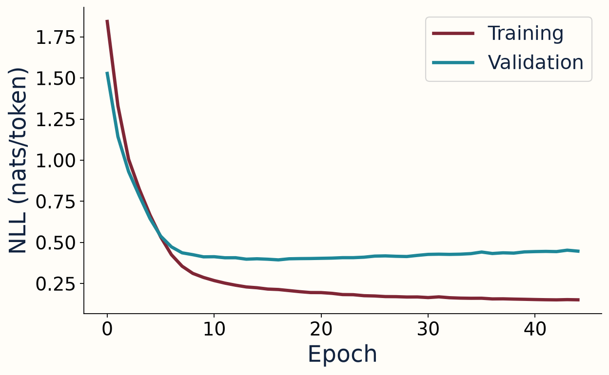
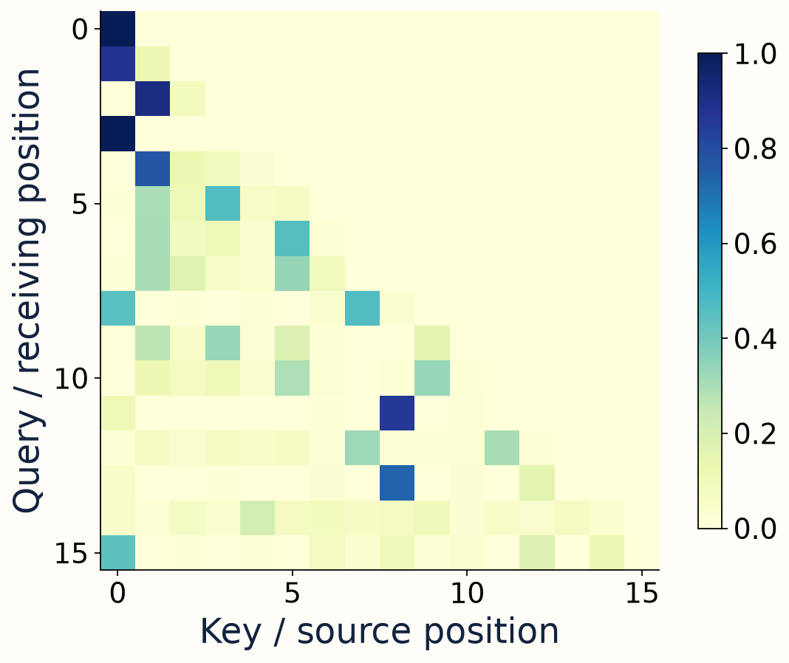

A Transformer block combines information mixing with local transformation and stable update paths.

W07 · H3 · From Attention to a Transformer
Build a model around attention
Machine Learning in Engineering Science · 19 Oct 202600:00–02:00 · 01/30
W07 · H3 · From Attention to a Transformer
Tokens are discrete input units
Token IDs index learned vectors; IDs do not encode numeric magnitude.
token ID → embedding lookup → vector
Machine Learning in Engineering Science · 19 Oct 202602:00–04:00 · 02/30
W07 · H3 · From Attention to a Transformer
Position information supplies order
Unmasked attention alone is permutation-equivariant when positions are absent.
Attention(PX) = P Attention(X)
Machine Learning in Engineering Science · 19 Oct 202604:00–06:00 · 03/30
W07 · H3 · From Attention to a Transformer
There are several position mechanisms
The teaching model adds learned position vectors; the original Transformer used sinusoidal encodings.
zₜ = token_embedding(idₜ) + position_embedding(t)
Machine Learning in Engineering Science · 19 Oct 202606:00–08:00 · 04/30
W07 · H3 · From Attention to a Transformer
Multiple heads learn multiple projections
Each head routes information in its own learned query/key/value subspace.
D = H × dhead
Machine Learning in Engineering Science · 19 Oct 202608:00–10:00 · 05/30
W07 · H3 · From Attention to a Transformer
Concatenate heads, then project
Head outputs are joined and mixed by a learned output projection.
MultiHead = Concat(head₁,…,headH) WO
Machine Learning in Engineering Science · 19 Oct 202610:00–12:00 · 06/30
W07 · H3 · From Attention to a Transformer
The feed-forward network transforms each token
The same nonlinear MLP is applied independently at each position.
FFN(x) = W₂ GELU(W₁x + b₁) + b₂
Machine Learning in Engineering Science · 19 Oct 202612:00–14:00 · 07/30
W07 · H3 · From Attention to a Transformer
Residual paths preserve an identity route
A sublayer adds a learned update to its input representation.
y = x + Sublayer(x)
Machine Learning in Engineering Science · 19 Oct 202614:00–16:00 · 08/30
W07 · H3 · From Attention to a Transformer
Normalization placement changes the block
Our teaching decoder normalizes before each sublayer.
x ← x + Attention(LN(x))
Machine Learning in Engineering Science · 19 Oct 202616:00–18:00 · 09/30
W07 · H3 · From Attention to a Transformer
An encoder uses bidirectional context
Encoder self-attention can access all valid input positions.
Machine Learning in Engineering Science · 19 Oct 202618:00–20:00 · 10/30
W07 · H3 · From Attention to a Transformer
A decoder-only model hides the future
Masked self-attention supports next-token prediction from a prefix.
Machine Learning in Engineering Science · 19 Oct 202620:00–22:00 · 11/30
W07 · H3 · From Attention to a Transformer
The original model had encoder and decoder
Decoder queries can retrieve from the separate encoder outputs.
Machine Learning in Engineering Science · 19 Oct 202622:00–24:00 · 12/30
W07 · H3 · From Attention to a Transformer
Predict the next token at every position
Shift targets one step ahead of inputs.
input: [0,1,2,3] target: [1,2,3,4]
Machine Learning in Engineering Science · 19 Oct 202624:00–26:00 · 13/30
W07 · H3 · From Attention to a Transformer
Cross-entropy scores the true next token
The model should assign high probability to observed next-token targets.
L = −mean log p(yₜ | x≤ₜ)
Machine Learning in Engineering Science · 19 Oct 202626:00–28:00 · 14/30
W07 · H3 · From Attention to a Transformer
Training is parallel across known positions
The causal mask permits computing many training losses together.
Machine Learning in Engineering Science · 19 Oct 202628:00–30:00 · 15/30
W07 · H3 · From Attention to a Transformer
Open a tiny model you can inspect
One block, width 32, four heads, and eight symbols keep the experiment small.
Machine Learning in Engineering Science · 19 Oct 202630:00–32:00 · 16/30
W07 · H3 · From Attention to a Transformer
Define what generalization means here
Separate streams use different noise seeds but share the same synthetic process.
Machine Learning in Engineering Science · 19 Oct 202632:00–34:00 · 17/30
W07 · H3 · From Attention to a Transformer
Read the four-dimensional score tensor
Every head produces a query-by-key grid for each example.
scores: (B, H, T, T)
Machine Learning in Engineering Science · 19 Oct 202634:00–36:00 · 18/30
W07 · H3 · From Attention to a Transformer
Trace the model before training
The output has one vocabulary-logit vector per input position.
IDs: (B,T) → logits: (B,T,V)
Machine Learning in Engineering Science · 19 Oct 202636:00–38:00 · 19/30
W07 · H3 · From Attention to a Transformer
Fit a training-only bigram baseline
Estimate the next state from the current state using transition counts.
P(next | current) = smoothed count / row total
Machine Learning in Engineering Science · 19 Oct 202638:00–40:00 · 20/30
W07 · H3 · From Attention to a Transformer
Select by validation, evaluate test afterward
Keep the checkpoint with lowest validation negative log-likelihood.

Machine Learning in Engineering Science · 19 Oct 202640:00–42:00 · 21/30
W07 · H3 · From Attention to a Transformer
Inspect actual learned attention
Rows are receiving positions; columns are source positions.

Machine Learning in Engineering Science · 19 Oct 202642:00–44:00 · 22/30
W07 · H3 · From Attention to a Transformer
A future intervention must preserve earlier logits
Change tokens after position 7; logits at positions 0–7 should remain identical.
Δearlier = max |old_logits − new_logits|
Machine Learning in Engineering Science · 19 Oct 202644:00–46:00 · 23/30
W07 · H3 · From Attention to a Transformer
Test the position claim precisely
Permute inputs to unmasked attention without positional information.
Machine Learning in Engineering Science · 19 Oct 202646:00–48:00 · 24/30
W07 · H3 · From Attention to a Transformer
Generate one token, then append it
Autoregressive decoding grows the prefix sequentially.
Machine Learning in Engineering Science · 19 Oct 202648:00–50:00 · 25/30
W07 · H3 · From Attention to a Transformer
Long context has a measurable cost
Dense attention pair counts grow as T² at fixed head count.
T=16: 256 pairs T=32: 1024 pairs
Machine Learning in Engineering Science · 19 Oct 202650:00–52:00 · 26/30
W07 · H3 · From Attention to a Transformer
Choose models using task evidence
Streaming state, context length, data size, and compute budget all matter.
Machine Learning in Engineering Science · 19 Oct 202652:00–54:00 · 27/30
W07 · H3 · From Attention to a Transformer
A token generator is one agent component
An agent also needs tools, state management, permissions, and a stopping rule.
Machine Learning in Engineering Science · 19 Oct 202654:00–56:00 · 28/30
W07 · H3 · From Attention to a Transformer
Preserve the experiment, not just a score
Record data identity, configuration, baseline, checkpoint, and observed tests.
Machine Learning in Engineering Science · 19 Oct 202656:00–58:00 · 29/30
W07 · H3 · From Attention to a Transformer
Exit: explain the complete causal chain
Sequence → memory → retrieval → representation → prediction → evidence.
Why is attention only part of the story?
A model also needs position handling, learned transformations, an objective, data discipline, and evaluation; an agent additionally needs controlled actions.
Machine Learning in Engineering Science · 19 Oct 202658:00–60:00 · 30/30